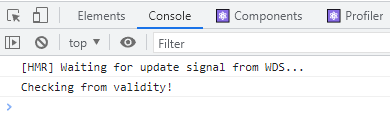
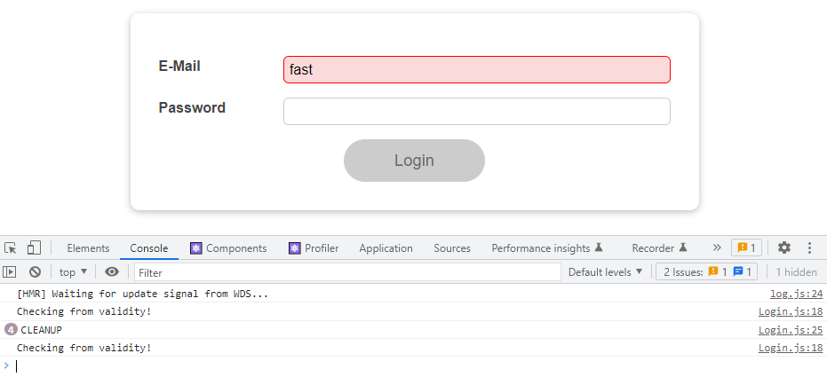
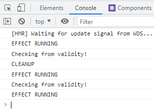
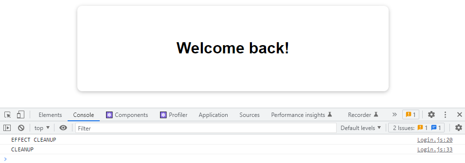

What are Side Effect & Introducing useEffect
在 React component 中，如果有 State 被更新，component function 會再次被呼叫，並交叉比對原 DOM 物件與新的 DOM 物件之間的差異進行重新渲染，以回應使用者的操作行為，但在某些情況如 HTTP Request，React 其實並不在意這些非同步行為，因此可能為導致資料更新上的 Bug 或 Infinite loop 的情況發生，接下來將介紹一些 React 中的 hooks 來解決這些問題。
useEffect
useEffect hook 中存在兩個參數，分別為以下兩者:
- Callback function: 放入 side effect 程式，在 dependencies 改變時會被呼叫
- Dependencies array: 將所有 dependency 放入 array，其中的更動會觸發前面的 callback function
那麼到底什麼時候需要使用到這組 hook 呢? 一組簡易的登入範例如下:
登入成功後，將成功的變數紀錄在 localStorage，這麼一來在下次造訪時，就可以透過這個變數判斷是否登入，進而跳過再次登入的環節
1 | function App() { |
到目前為止看似一切正常，但在執行後就會發現，出現了以下 error log
原因是在上述的範例中，出現了 Infinite loop，因為在判斷 localStorage 中變數狀態正確後，便去更改 State 的值，在更改的 State 的值就會觸發 component function re-render，進而導致因再次判斷正確後又更改 State 的 Infinite loop ; 所以在這裡就會需要使用 useEffect 將這段程式碼放到 callback function 之中，如果第二個變數中的 Dependencies Array 沒有加入執行時機，那麼就只會在第一次 render 時執行，這麼一來就可以避免 Infinite loop 的出現了
1 | function App() { |
Dependencies
在前面的範例中，將判斷 localStorage 的程式碼放到 useEffect 之中，避免因 component function 觸發導致的 Infinite loop 情況發生，但第二個參數 Dependencies Array 為空，表示只有在 component function 執行時會觸發其中的程式碼。
但在很多情況如非同步 HTTP Request 或使用者行為等，會需要被動的監聽某些值的話來執行對應的程式碼，這時候就會需要把要監聽的值作為 Dependency 放入第二個參數 Array 之中，以達到被動觸發的目的。
1 | const Login = props => { |
Cleanup function
延續上方的範例，透過 useEffect 監聽每次欄位變動時，都會即時做出對應的驗證，但這麼做其實會造成瀏覽器很大的負擔，更何況如果這個驗證行為是一個 Http Request，那就可想而知對效能來說是個很不好的消息。
為了解決這個問題，React 在 useEffect 提供了一組 return cleanup function，他只會在 first side-effct 後執行 (Component 第一次生成時不執行);透過這個方式，我們可以將上述的驗證行為包裝到一個非同步 setTimeout 之中，並給定一段延遲時間 (500ms，可自行定義)
1 | useEffect(() => { |

但到目前為止，我們只是延遲了欄位更改後的對應驗證，並沒有真的移除這些非必要的即時驗證，這時候就可以透過原生的方式，將 setTimeout 賦予一個變數，並在 cleanup function 中透過 clearTimeout 移除在限定時間內(這裡是先前設定的 500ms)的非必要即時驗證，這麼一來就會發現，只有在超過時間的行為，會真的執行 useEffect 中的程式碼了，因為在這時間內的行為都會在 cleanup function 中被移除
1 | useEffect(() => { |

Summary
只有第一組 callback function
如果在使用 useEffect 時，只有帶入第一個參數 callback funciton，第二個參數 dependencies array 甚至連 empty array 都沒有帶入的話，其中的程式碼就會在每次 component function 執行時跟著執行
1 | useEffect(() => { |

Empty Dependencies Array
要避免這個情況就是至少應該給予 dependencies array 一個 empty array
1 | useEffect(() => { |
如果是一個 empty dependencies array 條件下的 cleanup function，在 component function 重新執行時不會觸發，但在該 comopnent 移除時 (頁面切換) 就會觸發
1 | useEffect(() => { |

資料參考
React - The Complete Guide (Incl Hooks, React Router, Redux)